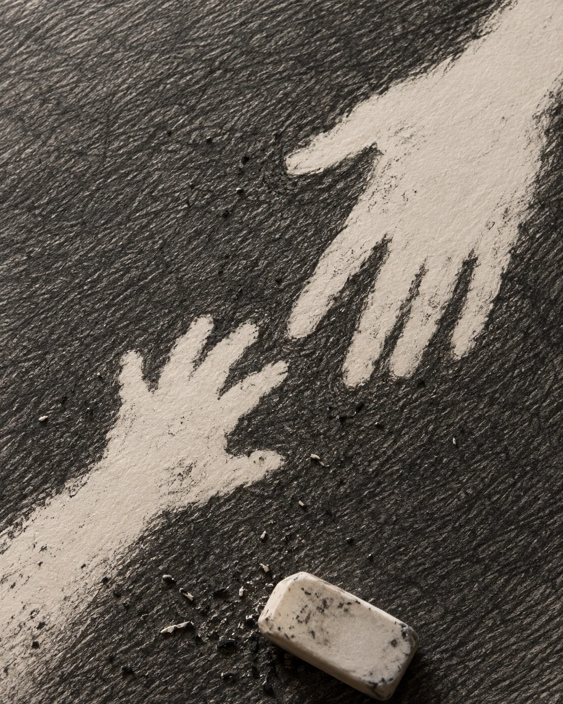
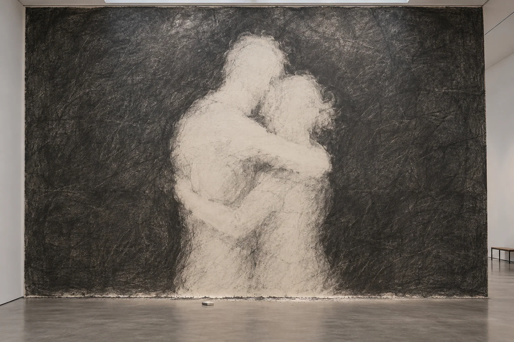
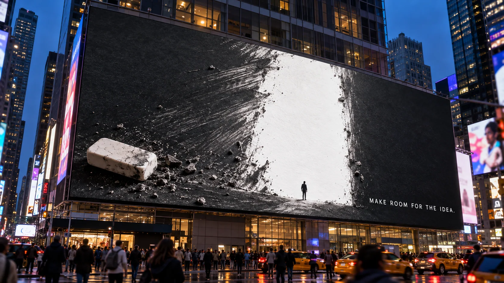

WHAT REMAINS
An ordinary eraser makes connection and possibility visible by taking graphite away.

The idea
The eraser creates by removing. In three chapters, exposed paper becomes a near-touch, an embrace and an open passage. The absence is the subject; the same small, inexpensive eraser supplies the physical mechanism at every scale.
Making the world
Graphite texture, rubbed edges, paper fibre and eraser crumbs carry the story from a macro surface to a gallery wall and a fictional Times Square placement. These are AI-assisted concept images, not photographs of a built installation or purchased outdoor media.
The series

